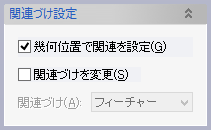

境界要素(フェイス,カーブ)で囲まれた領域に平板形状のソリッドを作成します。

操作方法
パラメータの入力が整うと作成形状が表示されます。形状の確認後、OKボタンで実行します。
パラメータ
- 位置


板の基準平面位置を指定します。
- 厚みづけ


板厚と基準(+側、-側、両側、２方向)を指定します。
- プロファイル

境界プロファイルを指定します。境界を構成する順に選択する必要があります。
カーブ(カーブ,エッジ、スケッチ(全体、レイヤー、カーブ）),フェイスをプロファイルとして選択できます。
境界はシステムがトリム処理をしますので互いに突き出していても構いません。
- 関連づけ設定（オプション）


 境界指定フィーチャー
境界指定フィーチャー